Castle Wars
Introduction | Location | Requirements | Recommended Items | Going to War | Rewards | Development Team
Castle Wars is only accessible to RuneScape Members. Please subscribe to get this feature.
Please note this is a 'Safe' minigame. If you die during this minigame, you will retain all of your items.
Introduction
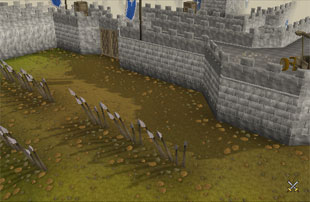
Castle Wars is a combat-based team game. The standards are flags - one on the top of each castle. Once the standard has been captured the winning team receives a point and the standards are replaced. The teams continue to steal each other's standard until the time runs out.
There are two teams: the Zamorakians and the Saradominists. Both teams try to infiltrate each others' castles, capture each other's standards, and take them back through enemy lines to their own base to claim a victory point for their chosen deity.
Location
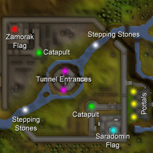
You can use various teleport spells such as Ardougne Teleport, Tree Spirit and Watch Tower Teleport to bring you near to the entrance of Castle Wars.
Alternatively, if you can't be bothered to walk there, obtain a ring of duelling. This ring has the ability to teleport you to either the Al Kharid Duel Arena or the Castle Wars Arena. Simply rub the ring while it is in your inventory and choose the Castle Wars option, it will then teleport you to the entrance of Castle Wars. Please remember that you only have eight uses of this ring.
Note: If you die in Castle Wars then you will re-spawn in the castle and not lose any items.
Requirements
There are no requirements to join in - just turn up and choose a side! Make sure you are not wearing a helmet or cape, though.
Recommended Items
We recommend that you bring a good choice of armour and weaponry to protect you from any opponent. Also, a good source of potions will aid you in difficult situations.
You may also be tempted to bring a castlewars bracelet which has positive effects while playing the minigame.
Note: Any non-combat items are not allowed in the arena, e.g. food.
Going to War
Once you have made your way to the entrance of Castle Wars, you can either speak to Lanthas and he will explain the game, or you can buy a Castle Wars manual from him for 5 gold pieces.
To start the game, choose which team you would like to be on and enter a portal. Entering the red portal on the left will enrol you in the Zamorakian team, entering the blue portal on the right will enrol you in the Saradominist team. The green portal in the middle is the Guthix portal. If you choose to go through this portal you will be enrolled into the team with the least players - either Saradomin or Zamorak. Once you have entered a portal, you will be brought to a waiting area for your team. Then wait for the game to start.
In the Waiting Area
![[image]](../img/main/kbase/minigames/castlewars/castle_wars_sheep.gif) A single game lasts twenty minutes with a five minute interval between each game. It is in the five minutes between a game starting and finishing that you will go to the waiting room. A message will be shown at the top of the screen indicating the length of time remaining to start the next game.
A single game lasts twenty minutes with a five minute interval between each game. It is in the five minutes between a game starting and finishing that you will go to the waiting room. A message will be shown at the top of the screen indicating the length of time remaining to start the next game.
If you enter a portal from the waiting room wearing an item that does not represent the god you have chosen, then you will change form and remain that way until the game starts.
For example, if you enter the Saradomin portal wearing a piece of Zamorak armour then you will change into a rabbit. However, if you enter the Guthix portal wearing the same armour you will change into a sheep.
Entering the Zamorak portal with items that represent the other gods will make you change form into an imp.
Note: If you change form into any of the above, you will return to your normal form once you exit the portal.
There are five different levels in Castle Wars - underground, the ground floor, the first level, the second level and the top level. Using these different levels, you have to gain access to your enemy's castle and steal their standard.
Underground
Note: There are other entrances to the underground tunnels by entering through trapdoors underneath the team bases.
The underground tunnel leads from under your team's castle to the central tower in the Castle Wars area. It is a good way to gain access to your opposing base. However, the other team will also be able to travel underground, caution must be taken when traveling down this path as others may collapse the tunnel walls.
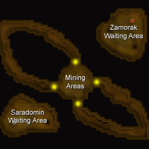
On this level you will find various challenges which may prevent you from gaining access to your enemies castle. Using the pickaxe (which can be found on the table of the ground floor) you can tunnel past rocks or collapse walls on top of your enemy to kill them.
The tunnels underground are narrow so you can use the barricades to block the paths. If this is used to stop you, you can remove the barricades by attacking them, or setting them alight using a tinderbox (also found on the table of the ground floor).
Ground Floor
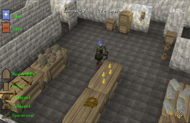
| Item | Use |
![[image]](../img/main/kbase/items/misc/emptybucket.gif) Empty bucket |
Can be filled with water from a water source and used to extinguish flaming catapults or barricades. |
![[image]](../img/main/kbase/items/misc/climbing_rope.gif) Climbing rope |
Can be used to climb opposition walls. |
| 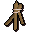 Barricade |
Used to block the paths of up to ten players. |
![[image]](../img/main/kbase/items/potions/other_potions/explosive_potion.gif) Explosive potion |
Used to clear blocked paths from barricades, rocks underground or to destroy the enemy catapult. If dropped, this can cause you damage. |
![[image]](../img/main/kbase/items/misc/toolkit.gif) Toolkit |
Used to repair the catapult and doors when damaged. |
![[image]](../img/main/kbase/items/pickaxes/bronze_axe.gif) Pickaxe |
Used to remove rocks from underground paths or collapse walls. |
| 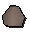 Rock |
Used as ammunition for the catapults. |
First Level
The team bases are located on the first level of each castle. They are protected by energy fields, so that members of the opposing teams cannot gain access to them.![[image]](../img/main/kbase/items/misc/bandage.gif) Inside each base there are bandages on a table. These can be used to heal your character or a team member when injured. The bandages will heal up to 10 Hitpoints, restore 30% of your energy and cure any poisons that you are suffering from.
Inside each base there are bandages on a table. These can be used to heal your character or a team member when injured. The bandages will heal up to 10 Hitpoints, restore 30% of your energy and cure any poisons that you are suffering from.
The catapults are located on the walls of the first level. They are a good method of attacking the other team. To fire the catapult, use a rock (which can be found in the room on the ground floor) with the catapult.
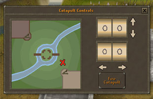
The catapult is a good way of defending your castle. However, if you were to disable another team's catapult, your team would be given a much better chance of obtaining the opposition's standard. To disable the other team's catapult use a tinderbox or explosive potion with it; it will catch fire and become burnt. If the team opposing you tries this tactic, you can repair your catapult by using a toolkit with it and it will be restored to its operational state.
Note: Be careful when using the catapult as you can also hit members of your own team as well.
Second Level
This floor will be one of the more heavily defended areas as it is the only way to gain access to the team's standard.Top Level
This level is where each of the team standard's are located, just above the team base.Game Icons
Apart from the Time Remaining icon, the icons below have two possible messages displayed next to them. The message shown in green means that your defences are safe, while messages shown in red means that your defences have been infiltrated.If the text is in yellow, it means the flag has been dropped.
| Icon | Green Message | Red Message |
Saradomin Standard Status |
Safe | Taken |
Zamorak Standard Status |
Safe | Taken |
Gate Icon |
The gate will display a green health bar. The more damaged it is, the more the bar will turn red | |
Door Icon |
Locked | Unlocked |
Tunnel Icon 1 and 2 |
Collapsed | Cleared |
Your Catapult Status |
Operational | Damaged |
![[image]](../img/main/kbase/minigames/castlewars/time_left.gif) Time Remaining |
- | - |
Gaining Access to the Enemy base
There are various methods of gaining access to your enemy's base. It is likely that all ways are going to be defended well in order to protect their standard. A combination of the routes below may be the best way to get the flag.
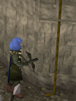
- You can go through the central tower, trying to avoid the other team.
- You can use the stepping stones on either side of the central tower to cross the river.
- You can take the underground route which will lead you directly to the other castle, or (using the ladder) you can go to the central tower, depending on your target route.
- There are locked doors on the sides of the castles which you may enter, if you can pick the lock. These doors do not require a Thieving level to enter, so just keep trying until you can go through, but remember it's best not to stay in one position too long because the longer you remain there, the more of a target you'll be.
- You can use the ropes, provided within the ground floor room, with the battlements on the sides of the castles to climb the walls and reach the first level. Once you have used your rope for this, you cannot detach it from the battlement.
- You can go through the main doors of the castle. These doors will be guarded well because they are the main entrance. But watch out for the opposition because they may forget to close this door and give you an opportunity to enter. Likewise, don't forget to close your main gate when going out unless you want to give the enemy a huge advantage.
Rewards
After a successful game of retrieving the enemies standard, you will be rewarded with tickets. These tickets can be exchanged for many rewards. Go and speak to Lanthas in the entrance to Castle Wars and right click on him to access his chat. Click on Trade with Lanthas to view the rewards that you can swap your tickets for.
| Red Decorative | White Decorative | Gold Decorative | |||
| Item | No. of tickets needed | Item | No. of tickets needed | Item | No. of tickets needed |
| 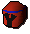 Red decorative head |
4 | 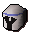 White decorative head |
40 | 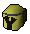 Gold decorative head |
400 |
| 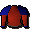 Red decorative body |
8 | 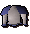 White decorative body |
80 | 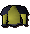 Gold decorative body |
800 |
| 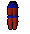 Red decorative legs |
6 | 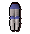 White decorative legs |
60 | 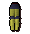 Gold decorative legs |
600 |
![[image]](../img/main/kbase/armour/melee/red_decor_shield.gif) Red decorative shield |
6 | 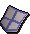 White decorative shield |
60 | 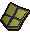 Gold decorative shield |
600 |
| 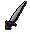 Red decorative sword |
5 | 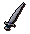 White decorative sword |
50 | 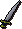 Gold decorative sword |
500 |
| Item | No. of tickets needed |
| 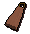 Red Castle Wars cloak |
10 |
| 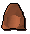 Red Castle Wars hood |
10 |
| 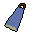 Blue Castle Wars cloak |
10 |
| 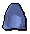 Blue Castle Wars hood |
10 |
For more information on the stats for these decorative melee items see Melee - Castle Wars Items.
Development Team
Developer: Graham B
Graphics: Joe R, John S
QA: Danny G
Audio: Ian T

|
More articles in Minigames
|
|
|
Further Help
If this article does not help you, you may find the following sections of the RuneScape site helpful:
|
|